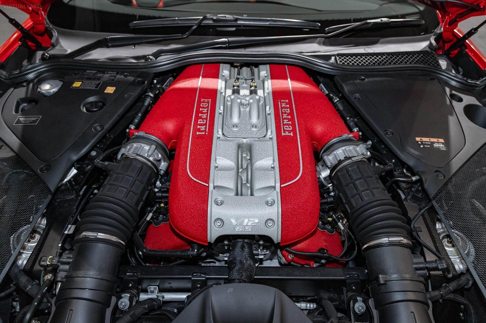
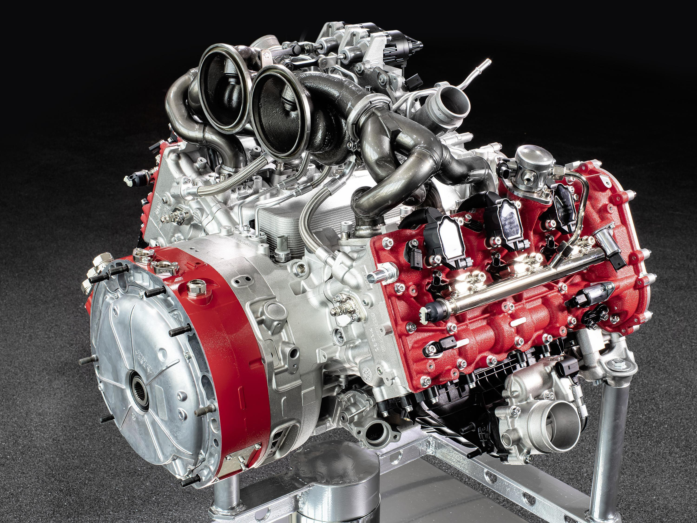

La tecnologia Ferrari
Ferrari utilizza tecnologie moderne per creare automobili sportive veloci e potenti.
Gli ingegneri Ferrari lavorano su molti elementi della macchina, come il motore, l'aerodinamica, i freni e l'elettronica.
Molte soluzioni tecnologiche vengono sviluppate anche grazie all'esperienza nelle competizioni automobilistiche.
Il motore Ferrari

Il motore è uno degli elementi più importanti di una Ferrari.
Ferrari ha prodotto diversi tipi di motori, compresi motori V8 e V12.
I motori sono progettati per offrire alte prestazioni e una buona risposta durante la guida.
La ricerca sul motore permette di migliorare continuamente le prestazioni delle automobili.
L'aerodinamica

L'aerodinamica studia il modo in cui l'aria passa intorno alla macchina.
Una buona aerodinamica permette alla vettura di essere più stabile durante la guida.
Gli ingegneri studiano la forma della carrozzeria, gli spoiler e altre parti della macchina.
La tecnologia aerodinamica è particolarmente importante nelle automobili da competizione.
La tecnologia ibrida

Negli ultimi anni Ferrari ha sviluppato anche automobili con tecnologia ibrida.
Un sistema ibrido combina un motore a benzina con uno o più motori elettrici.
Un esempio è la LaFerrari, presentata nel 2013.
Anche la tecnologia ibrida permette di ottenere alte prestazioni utilizzando sistemi moderni.
I freni
I freni sono molto importanti per la sicurezza e per le prestazioni di una Ferrari.
Durante la guida ad alta velocità è necessario poter rallentare la macchina in modo efficace.
Ferrari utilizza sistemi frenanti progettati per funzionare anche in condizioni molto impegnative.
- Dischi dei freni
- Pastiglie dei freni
- Sistemi elettronici
- Controllo della frenata
Elettronica e sistemi moderni
Le automobili moderne Ferrari utilizzano molti sistemi elettronici.
Questi sistemi aiutano a controllare diversi elementi della vettura.
- Controllo della trazione
- Sistemi di gestione del motore
- Controllo elettronico
- Sistemi di sicurezza
L'elettronica permette alla macchina di gestire meglio la potenza e il comportamento durante la guida.
Tecnologie utilizzate nelle Ferrari
| Tecnologia | Descrizione | Utilità |
|---|---|---|
| Motore V8 | Motore utilizzato in diversi modelli Ferrari per ottenere alte prestazioni. | Potenza e velocità |
| Motore V12 | Un motore con dodici cilindri utilizzato in alcuni modelli Ferrari. | Alte prestazioni |
| Aerodinamica | Studia il movimento dell'aria intorno alla vettura. | Stabilità e prestazioni |
| Tecnologia ibrida | Combina un motore a benzina con uno o più motori elettrici. | Prestazioni e tecnologia moderna |
| Fibra di carbonio | Materiale leggero e resistente utilizzato in alcune parti delle automobili. | Riduzione del peso |
| Elettronica | Sistemi elettronici che controllano diversi elementi della vettura. | Controllo e sicurezza |
Materiali leggeri
Per costruire automobili sportive è importante utilizzare materiali resistenti e leggeri.
Ferrari utilizza materiali moderni per ridurre il peso della vettura e aumentare le prestazioni.
Tra i materiali utilizzati nelle automobili sportive ci sono anche materiali compositi e la fibra di carbonio.
La tecnologia e la Formula 1
La Formula 1 è molto importante per lo sviluppo tecnologico Ferrari.
Durante le gare gli ingegneri raccolgono molti dati sulla macchina.
Questi dati possono essere studiati per migliorare le prestazioni della monoposto.
La competizione è una parte importante dello sviluppo tecnologico Ferrari.
Curiosità sulla tecnologia Ferrari
- Ferrari utilizza motori V8 e V12 in diversi modelli.
- L'aerodinamica è importante per la stabilità della vettura.
- Ferrari ha sviluppato anche automobili ibride.
- La Formula 1 aiuta lo sviluppo di nuove tecnologie.
- I materiali leggeri aiutano a ridurre il peso della macchina.
Conclusione
La tecnologia è fondamentale per Ferrari.
Motori, aerodinamica, elettronica, materiali e sistemi ibridi permettono di creare automobili sempre più moderne.